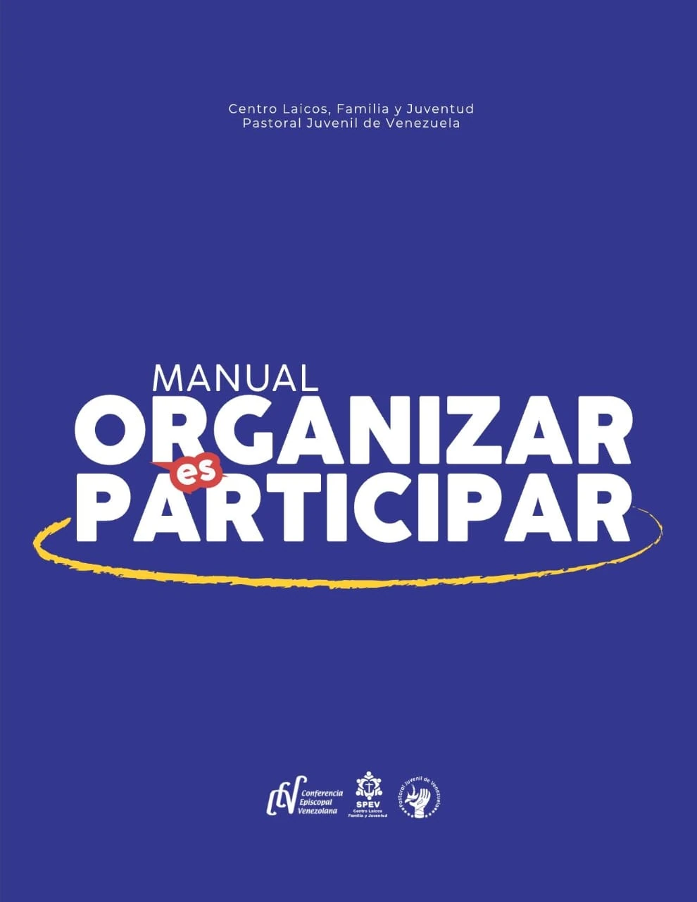

Juventud
Recursos de Juventud
El Área de Juventud publica el manual «Organizar es participar», un PDF de 7,2 MB que sirvió de base a un encuentro de Kairós Joven.

Manual «Organizar es participar»
- Formato: PDF, 7,2 MB.
- Para qué sirve: es la guía con la que el segundo encuentro de Kairós Joven, el 3 de diciembre de 2025, repasó el perfil del coordinador, las instancias de participación, las funciones del equipo parroquial y del secretariado, y los roles del coordinador y del asesor.
Otros materiales
- Jornada Nacional de la Juventud 2026: guion litúrgico, herramientas para pasar de la palabra a la acción y un documento sobre la paz.
- Kairós Joven: los encuentros fueron por Zoom, con formación sobre la Palabra, la cultura del encuentro, la salud emocional y el acompañamiento psicoespiritual.